Revision PDF
Study Map PDF
- Physics: study map overview
Start here. The base runs from quantum mechanics (postulates to foundations) through quantum optics and QED, then classical fields, optoelectronics and photonics, semiconductor physics and the electronics built on it (circuits, digital, power, superconducting); every note has derivations, worked numbers, engineering applications and links, and the revision domain holds formula sheets and exam problems with full solutions.
Formula Sheets PDF
- Formula sheet: fields, optoelectronics and photonics overview
Maxwell, waves, lines and antennas; wave optics, fibres, sources and detectors; integrated-photonics components — the formulas used in exam problems, each derived in its note. - Formula sheet: quantum mechanics, quantum optics and QED overview
The formulas to know by heart for quantum mechanics, quantum optics and QED, grouped by topic with the note where each is derived. - Formula sheet: semiconductors, circuits and electronics overview
Carrier statistics and junctions; circuit theory and transforms; MOSFET, inverter, delay and power formulas in the course conventions; power and superconducting devices.
Exam Practice PDF
- Exam practice: circuit theory (solved) example
Eight circuit-theory problems with complete solutions: Thévenin, RC transients, RLC damping, phasors, AC power and power-factor correction, Fourier response, Laplace transients, transformer and three-phase losses. - Exam practice: digital electronic circuits (solved) example
Ten problems in the format of the written exam (6 points each): NMOS loads with body effect, mirrors, CMOS VTC regions and noise margins, symmetric sizing for a delay target, complex-gate sizing, pseudo-NMOS fan-in, dynamic logic frequency, power, DRAM read and leakage, SRAM read stability. - Exam practice: fields, optoelectronics and photonics (solved) example
Ten problems in the style of Kasap's end-of-chapter exercises and engineering-electromagnetics exams, with numerical solutions: waves in lossy media, Fresnel, lines, Gaussian beams, Fabry–Perot, fibres, LEDs, lasers, photodiodes and a ring resonator. - Exam: Basics of Opto-Electronics (all past papers solved) example
The written exam recycles eight exercise types (photodiode NEP, link budget with dispersion compensation, step-index fibre, Fabry–Perot laser diode with Gaussian output, DH laser threshold, RC receiver noise, gas and InGaAsP cavities, bandgap and photon counting); every paper from February 2022 to June 2025 is solved here with the course formula sheet, plus the traps that separate 28 from 30 cum laude. - Exam practice: optoelectronics over the whole programme (30 solved problems) example
Thirty multi-part problems in the format of the written exam, one or more for every chapter — waves and Fresnel, coatings, interferometers and gratings, coherence, waveguides and fibres, link budgets, couplers, OTDR and sensors, LEDs, quantum wells, gas and semiconductor lasers, DFB and VCSEL, EDFA, pin and APD receivers, photoconductors, BER, solar cells, image sensors, polarisation and Pockels cells — each with a full numerical solution. - Exam practice: quantum electrodynamics (solved) example
Six problems on Dirac algebra, kinematics, propagators, cross sections and radiative corrections, with complete solutions and the typical oral-exam follow-up question for each. - Exam practice: quantum mechanics (solved) example
Eight exam-style problems with complete solutions covering measurement, uncertainty, wells, oscillator, angular momentum, perturbation theory, golden rule and entanglement; try each one for 15–20 minutes before reading the solution.
Quantum Mechanics PDF
Quantum Mechanics PDF
- Quantum mechanics: the map of the subject overview
States are unit vectors (rays) of a complex Hilbert space, observables are self-adjoint operators, probabilities are
of a complex Hilbert space, observables are self-adjoint operators, probabilities are  , and time evolution is the unitary group generated by the Hamiltonian; everything else in the course is a consequence or an application of these four rules.
, and time evolution is the unitary group generated by the Hamiltonian; everything else in the course is a consequence or an application of these four rules.
Postulates PDF
- The Stern–Gerlach experiment example
Silver atoms through an inhomogeneous field split into exactly two beams,
split into exactly two beams, 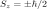
; sequential filters show that measuring destroys the information on
destroys the information on  , which forces a complex vector-space description of states.
, which forces a complex vector-space description of states. - Kets, bras and operators definition
A state is a ket in a complex Hilbert space; bras
in a complex Hilbert space; bras  are the dual (antilinear) vectors,
are the dual (antilinear) vectors,  ; the completeness relation
; the completeness relation  turns every operator into a matrix
turns every operator into a matrix  .
. - Observables, eigenvalues and spectral decomposition theorem
A Hermitian operator has real eigenvalues and orthogonal eigenkets that form a basis, so
has real eigenvalues and orthogonal eigenkets that form a basis, so 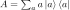
; two such bases are connected by a unitary , and trace and eigenvalues are basis independent.
, and trace and eigenvalues are basis independent. - Measurement: Born rule and collapse definition
Measuring on
on  gives
gives  with probability
with probability 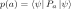
and leaves the state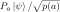
; the mean is and the spread
and the spread 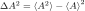
. - Commutators and compatible observables theorem
Two observables are compatible when![\([A,B]=AB-BA=0\)](m/a6d00a2ab67f8d0cbc6028a619274c1b9644f026.svg) ; then they share a basis of eigenkets
; then they share a basis of eigenkets 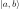
, their measurements do not disturb each other, and a maximal set of them (a CSCO) labels the states uniquely. - The uncertainty relation inequality
For any state and any two observables,![\(\Delta A\,\Delta B\ge\tfrac12|\braket{[A,B]}|\)](m/213b1b8c5a10ede1550745e29e65d02829805a98.svg) ; for position and momentum , with equality only for Gaussian wave packets.
; for position and momentum , with equality only for Gaussian wave packets. - Position, momentum and wave functions theorem
Momentum is the generator of translations,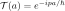
; this forces![\([x,p]=i\hbar\)](m/aac29b6f6725bd6ad211015ca463c62d09cdd19b.svg) ,
,  and
and  , so position and momentum wave functions are Fourier transforms of each other.
, so position and momentum wave functions are Fourier transforms of each other.
Dynamics PDF
- The Schrödinger equation and time evolution theorem
Time evolution is a unitary with
with  ; for time-independent
; for time-independent  , and expanding in energy eigenkets
, and expanding in energy eigenkets 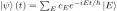
; in position space with conserved probability current.
with conserved probability current. - Heisenberg picture and Ehrenfest's theorem theorem
Moving the time dependence onto operators,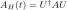
, gives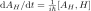
; for the expectation values obey Newton's law
the expectation values obey Newton's law 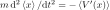
. - Spin precession and Rabi oscillations example
A spin in a static field precesses at the Larmor frequency ; adding a transverse field rotating at
; adding a transverse field rotating at  produces the Rabi formula
produces the Rabi formula  , the basis of NMR, MRI and qubit control.
, the basis of NMR, MRI and qubit control. - The propagator and Feynman's path integral theorem
The amplitude to go from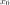
at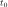
to at
at  is
is  , so
, so  ; splitting time into slices gives
; splitting time into slices gives ![\(K=\int\mathcal Dx\,e^{iS[x]/\hbar}\)](m/fc5a668167637631126474aed5e04a5409fdecc2.svg) , a sum over all paths weighted by the classical action.
, a sum over all paths weighted by the classical action. - Electromagnetic potentials and gauge invariance theorem
A charge in a field has ; a gauge change
; a gauge change  is compensated by the phase
is compensated by the phase 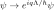
, and the potentials themselves are physical through the Aharonov–Bohm phase .
.
One Dimensional Systems PDF
- Square wells: particle in a box and finite well example
In an infinite well of width ,
,  and
and 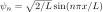
; a finite well of depth always has at least one bound state, with even and odd states found from
always has at least one bound state, with even and odd states found from  and
and 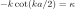
. - The quantum harmonic oscillator theorem
With ,
, ![\([a,a^\dagger]=1\)](m/7fde701d66263af9b735216a7c5665109b8f56ed.svg) and
and  , so
, so  ,
, 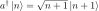
, ; the same algebra quantises light, phonons and LC circuits.
; the same algebra quantises light, phonons and LC circuits. - Tunnelling and the WKB approximation theorem
A particle of energy crosses a barrier of width with probability
crosses a barrier of width with probability 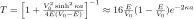
; for smooth barriers WKB gives .
.
Angular Momentum PDF
- Angular momentum: algebra and spectrum theorem
Generators of rotations satisfy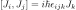
; from this alone,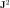
and have eigenvalues
have eigenvalues 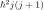
and ,
, 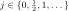
, , and
, and 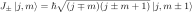
. - Orbital angular momentum and spherical harmonics definition
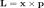
has integer ; its eigenfunctions are the spherical harmonics
; its eigenfunctions are the spherical harmonics  , and in a central potential
, and in a central potential 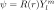
with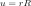
solving a 1D equation with the centrifugal barrier .
. - The hydrogen atom theorem
For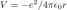
,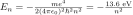
, degeneracy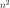
(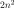
with spin), ground state ,
,  Å.
Å. - Addition of angular momenta theorem
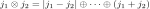
: the coupled kets are reached by lowering from the top state and orthogonalising; two spins ½ give a triplet (symmetric) and a singlet
are reached by lowering from the top state and orthogonalising; two spins ½ give a triplet (symmetric) and a singlet 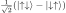
.
Symmetries PDF
- Symmetries, conservation laws and degeneracy theorem
A unitary symmetry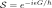
of the Hamiltonian,![\([\mathcal S,H]=0\)](m/ccc8567bcebaab0df9815d08a46e239e99b4eff7.svg) , makes
, makes  a constant of motion and forces degeneracies; discrete symmetries (parity, lattice translations, time reversal) give parity selection rules, Bloch bands and Kramers doublets.
a constant of motion and forces degeneracies; discrete symmetries (parity, lattice translations, time reversal) give parity selection rules, Bloch bands and Kramers doublets.
Approximation Methods PDF
- Time-independent perturbation theory method
For ,
, 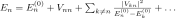
and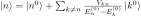
; with degeneracy, first diagonalise inside the degenerate subspace.
inside the degenerate subspace. - Time-dependent perturbation theory and Fermi's golden rule theorem
To first order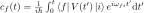
; a constant or harmonic perturbation coupling to a continuum gives the constant rate with .
. - Radiative transitions, dipole approximation and selection rules theorem
In the dipole approximation ; transitions require
; transitions require 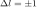
, ,
,  ; Einstein's relations
; Einstein's relations 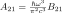
,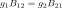
and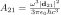
link absorption, stimulated and spontaneous emission. - Fine structure and the Zeeman effect example
Relativistic kinetic correction plus spin–orbit plus Darwin term give![\(E_{nj}=E_n\left[1+\frac{\alpha^2}{n^2}\left(\frac{n}{j+1/2}-\frac34\right)\right]\)](m/401772e2cda58f9764d564cb29a2e1990af57277.svg) ; a weak field shifts levels by
; a weak field shifts levels by  with the Landé factor
with the Landé factor 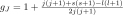
. - The variational method method
For any normalisable trial state, ; minimising over parameters of gives an upper bound to the ground energy whose error is second order in the error of the wave function.
; minimising over parameters of gives an upper bound to the ground energy whose error is second order in the error of the wave function.
Many Particles PDF
- Identical particles, bosons, fermions and Pauli's principle theorem
States of identical particles are symmetric (bosons, integer spin) or antisymmetric (fermions, half-integer spin) under exchange; antisymmetry gives Pauli exclusion and Slater determinants, and through the exchange term the spin-dependent energies that build the periodic table, magnetism and metals. - Scattering theory and the Born approximation method
Far from the target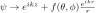
and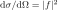
; to first order , the Fourier transform of the potential at momentum transfer
, the Fourier transform of the potential at momentum transfer 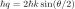
; Coulomb gives Rutherford's law.
Quantum Information PDF
- The density operator: pure and mixed states definition
An ensemble with weights of states is the operator
is the operator  : positive, trace one, ; it is pure iff
: positive, trace one, ; it is pure iff 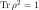
, and for a qubit with
with 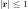
. - Entanglement and Bell inequalities theorem
A pure state of two systems is entangled if it is not a product; local hidden-variable theories obey the CHSH bound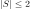
, whereas the singlet gives correlations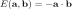
and , confirmed by loophole-free experiments. - Qubits and quantum gates definition
A qubit is a two-level system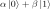
; single-qubit gates are SU(2) rotations of the Bloch sphere, CNOT entangles two qubits, and {H, T, CNOT} is universal; real qubits lose coherence with times (energy) and
(energy) and  (phase).
(phase).
Mathematical Foundations PDF
- Self-adjoint operators and the spectral theorem theorem
Observables in infinite dimensions are self-adjoint operators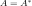
including equality of domains; the spectral theorem writes each as with a projection-valued measure, which gives Born probabilities
with a projection-valued measure, which gives Born probabilities  also for continuous spectra.
also for continuous spectra. - Stone's theorem and the Stone–von Neumann theorem theorem
Strongly continuous unitary groups are exactly with self-adjoint (Stone), which justifies the Hamiltonian as generator of dynamics; irreducible representations of the Weyl form of are all unitarily equivalent to the Schrödinger representation (Stone–von Neumann), so wave mechanics is not a choice. - Algebraic quantum theory: C*-algebras, GNS and Gleason theorem
Abstractly, observables form a C*-algebra and states are positive normalised linear functionals ; the GNS construction rebuilds a Hilbert space with
and states are positive normalised linear functionals ; the GNS construction rebuilds a Hilbert space with  ; Gleason's theorem shows that in dimension Born's rule is the only consistent probability on projections.
; Gleason's theorem shows that in dimension Born's rule is the only consistent probability on projections. - Group representations, Wigner's theorem and spin theorem
Symmetries act on rays, so by Wigner's theorem they are unitary or antiunitary up to phase; projective representations of SO(3) are true representations of its double cover SU(2), whose irreducible representations are labelled by : spin ½ exists because .
: spin ½ exists because .
Quantum Optics PDF
Quantum Optics PDF
- Quantum optics: the map of the subject overview
Each mode of the electromagnetic field is a harmonic oscillator; photons are its quanta, light states (Fock, coherent, squeezed, thermal) are distinguished by their correlation functions , and atoms couple to modes through the Jaynes–Cummings Hamiltonian and decay through master equations.
, and atoms couple to modes through the Jaynes–Cummings Hamiltonian and decay through master equations.
Field Quantization PDF
- Quantisation of the electromagnetic field theorem
In Coulomb gauge the free field is a sum of independent modes , each an oscillator: , ; a photon is one quantum of excitation of a mode.
; a photon is one quantum of excitation of a mode.
States Of Light PDF
- Fock states and thermal light definition
The number states have exactly photons and
photons and  ; thermal light is the mixture
; thermal light is the mixture  with and variance .
with and variance . - Coherent states definition
 is the eigenstate of with eigenvalue
is the eigenstate of with eigenvalue  ; it has Poisson photon statistics (
; it has Poisson photon statistics ( ), minimum uncertainty, and its mean field oscillates classically: the quantum description of an ideal laser.
), minimum uncertainty, and its mean field oscillates classically: the quantum description of an ideal laser. - Squeezed states definition
The squeeze operator , , reduces one quadrature to at the expense of the other
, reduces one quadrature to at the expense of the other  ; generated by degenerate parametric amplification, it beats the shot-noise limit in interferometers such as LIGO.
; generated by degenerate parametric amplification, it beats the shot-noise limit in interferometers such as LIGO.
Coherence PDF
- Photon statistics and Glauber correlation functions definition
Photodetection measures normally ordered correlations: gives interference visibility, photon-pair statistics;
photon-pair statistics;  for thermal, 1 for coherent, for Fock light — values below 1 are non-classical.
for thermal, 1 for coherent, for Fock light — values below 1 are non-classical. - The quantum beam splitter and Hong–Ou–Mandel interference example
A lossless beam splitter is a unitary on mode operators, , with ,
,  ; for 50:50 and one photon in each input, : the photons always leave together (HOM dip).
; for 50:50 and one photon in each input, : the photons always leave together (HOM dip).
Light Matter PDF
- The Jaynes–Cummings model model
A two-level atom coupled to one cavity mode in the rotating-wave approximation, , splits into 2×2 blocks
, splits into 2×2 blocks  with Rabi frequency
with Rabi frequency  ; even the vacuum drives Rabi oscillations.
; even the vacuum drives Rabi oscillations. - Spontaneous emission (Weisskopf–Wigner) and the Purcell effect theorem
Coupling an excited atom to the continuum of vacuum modes gives exponential decay with and a Lorentzian line of FWHM
and a Lorentzian line of FWHM  ; in a cavity the local density of modes changes and the rate is multiplied by the Purcell factor .
; in a cavity the local density of modes changes and the rate is multiplied by the Purcell factor . - Master equations and open quantum systems model
Tracing out a Markovian bath gives the Lindblad equation ; for a damped cavity , for a decaying atom , giving the optical Bloch equations with ,
,  .
.
Quantum Electrodynamics PDF
Quantum Electrodynamics PDF
- Quantum electrodynamics: the map of the subject overview
QED is the relativistic quantum theory of electrons, positrons and photons with coupling ; in the propagator approach every process is a sum of Feynman diagrams built from
; in the propagator approach every process is a sum of Feynman diagrams built from  ,
,  and vertices, giving cross sections as power series in
and vertices, giving cross sections as power series in  that agree with experiment to parts per trillion.
that agree with experiment to parts per trillion.
Relativistic Wave Equations PDF
- Four-vectors, natural units and Mandelstam variables definition
With metric and , , ,
,  ,
,  , ; for
, ; for  processes ,
processes ,  , with
, with  .
. - The Klein–Gordon equation theorem
Quantising gives ; its conserved density
gives ; its conserved density  is not positive and solutions with appear: a one-particle interpretation fails, and the equation describes charged spin-0 particles together with their antiparticles.
is not positive and solutions with appear: a one-particle interpretation fails, and the equation describes charged spin-0 particles together with their antiparticles. - The Dirac equation theorem
Linearising requires matrices with : ; its current has positive density, spin ½ appears automatically, and the non-relativistic limit gives the Pauli equation with .
. - Free Dirac solutions, completeness relations and antiparticles construction
Plane waves and
and  with
with  ,
,  , ; the spin sums
, ; the spin sums  ,
,  turn spin-averaged amplitudes into traces; negative-energy solutions propagating backward in time are positrons.
turn spin-averaged amplitudes into traces; negative-energy solutions propagating backward in time are positrons. - Trace theorems for gamma matrices identity
Spin-summed squared amplitudes reduce to traces: , traces of an odd number of 's vanish, ,![\(\Tr(\slashed a\slashed b\slashed c\slashed d)=4[(a\cdot b)(c\cdot d)-(a\cdot c)(b\cdot d)+(a\cdot d)(b\cdot c)]\)](m/2a9e30cd5713debe5bff4320b28dcf4b2e719ab0.svg) , plus contractions such as .
, plus contractions such as .
Scattering Theory PDF
- Green's functions and the Feynman propagator theorem
The Feynman propagator solves with the boundary condition that positive energies propagate forward and negative energies backward in time: ; for photons
; for photons  in Feynman gauge.
in Feynman gauge. - The S matrix, cross sections and decay rates definition
 ; squaring and dividing by flux and time gives
; squaring and dividing by flux and time gives  , and in the CM frame for : .
, and in the CM frame for : . - Feynman rules of QED in momentum space method
 is read off a diagram: for external fermions, for photons,
is read off a diagram: for external fermions, for photons,  per vertex, per internal fermion,
per vertex, per internal fermion,  per internal photon,
per internal photon,  per loop,
per loop,  per fermion loop and relative signs for exchanged fermions.
per fermion loop and relative signs for exchanged fermions.
Qed Processes PDF
- Compton scattering (Klein–Nishina) and pair annihilation example
Two diagrams (s- and u-channel electron exchange) give, for an electron at rest, , reducing to Thomson at low energy; crossing gives
at low energy; crossing gives  , which at rest yields two 511 keV photons.
, which at rest yields two 511 keV photons. - Coulomb scattering of electrons: the Mott formula example
First-order scattering of a Dirac electron off a static nucleus gives : Rutherford times a spin factor; nuclear size enters as and proton recoil leads to Rosenbluth's formula. - Møller and Bhabha scattering, and muon pair production example
 has t- and u-channel diagrams with a relative minus sign (Fermi statistics); has t-channel scattering and s-channel annihilation; at high energy
has t- and u-channel diagrams with a relative minus sign (Fermi statistics); has t-channel scattering and s-channel annihilation; at high energy ![\(\overline{|\mathcal M|^2}_{\rm Bhabha}=2e^4\left[\frac{s^2+u^2}{t^2}+\frac{2u^2}{st}+\frac{u^2+t^2}{s^2}\right]\)](m/13381ed7d71f15d26e1bbe485f10896a3597aa80.svg) .
.
Radiative Corrections PDF
- Radiative corrections and renormalisation theorem
At order three one-loop insertions appear — vacuum polarisation  , electron self-energy , vertex
, electron self-energy , vertex  ; their ultraviolet divergences are absorbed into the physical mass and charge (
; their ultraviolet divergences are absorbed into the physical mass and charge ( by the Ward identity), leaving finite predictions such as the running coupling .
by the Ward identity), leaving finite predictions such as the running coupling . - Strong-field QED: pair creation and the Euler–Heisenberg Lagrangian theorem
A static field can create pairs by tunnelling through the gap
can create pairs by tunnelling through the gap  , at a rate
, at a rate  with V/m; integrating out the electron loop gives the Euler–Heisenberg Lagrangian, which makes the vacuum a nonlinear, birefringent medium.
with V/m; integrating out the electron loop gives the Euler–Heisenberg Lagrangian, which makes the vacuum a nonlinear, birefringent medium. - The anomalous magnetic moment of the electron theorem
The vertex correction adds a Pauli form factor: , and : (Schwinger), now known to 12 digits.
(Schwinger), now known to 12 digits. - The Lamb shift example
The Dirac equation leaves and
and  of hydrogen degenerate; vacuum fluctuations of the field and vacuum polarisation lift by 1057.8 MHz, dominated by (Bethe).
of hydrogen degenerate; vacuum fluctuations of the field and vacuum polarisation lift by 1057.8 MHz, dominated by (Bethe).
Electromagnetic Fields PDF
Electromagnetic Fields PDF
- Electromagnetic fields: the map of the subject overview
From Coulomb, Ampère and Faraday to Maxwell's equations; then waves (plane waves, reflection, polarisation), guided waves (transmission lines, waveguides, S-parameters) and radiation (antennas): the classical limit of QED and the physics under every circuit and optical device.
Static Fields PDF
- Vector calculus and the field theorems identity
Gradient, divergence and curl with the theorems (Gauss) and (Stokes); Helmholtz: a field is fixed by its divergence and curl, which is why Maxwell's equations specify them. - Electrostatics and Gauss's law theorem
Static charges produce with , ; Gauss's law
; Gauss's law  solves symmetric problems in one line, and the stored energy is .
solves symmetric problems in one line, and the stored energy is . - Magnetostatics: Biot–Savart, Ampère and inductance theorem
Steady currents produce with and
with and  ,
,  ; Ampère's law
; Ampère's law  gives symmetric fields, magnetic circuits design cores, and inductance
gives symmetric fields, magnetic circuits design cores, and inductance  stores energy
stores energy  .
. - Poisson, Laplace and capacitance method
The potential obeys (Poisson),
(Poisson),  in charge-free regions (Laplace); by uniqueness any solution meeting the boundary conditions is the solution, so images and separation of variables are legitimate; capacitance follows:
in charge-free regions (Laplace); by uniqueness any solution meeting the boundary conditions is the solution, so images and separation of variables are legitimate; capacitance follows:  , per metre,
, per metre,  .
.
Maxwell PDF
- Faraday's law and electromagnetic induction theorem
A changing magnetic flux induces , i.e. ; the minus sign (Lenz) makes induced currents oppose the change, which gives inductance
; the minus sign (Lenz) makes induced currents oppose the change, which gives inductance  , transformers, generators and eddy-current losses.
, transformers, generators and eddy-current losses. - Maxwell's equations theorem
, ,,  ; the displacement current makes charge conservation consistent and predicts waves at
; the displacement current makes charge conservation consistent and predicts waves at  ; in phasor form
; in phasor form  .
. - Potentials, gauges and retarded potentials definition
 ,
,  solve the homogeneous Maxwell equations; the gauge freedom ,
solve the homogeneous Maxwell equations; the gauge freedom ,  allows the Lorenz condition, in which
allows the Lorenz condition, in which  ,
,  , solved by retarded potentials evaluated at .
, solved by retarded potentials evaluated at . - Poynting's theorem and electromagnetic power theorem
 : power entering a volume is stored or dissipated;
: power entering a volume is stored or dissipated;  is the power flux, time average
is the power flux, time average  in phasors.
in phasors.
Waves PDF
- Plane waves in lossless and lossy media theorem
A uniform plane wave , , has with ; lossless:
, , has with ; lossless:  ,
,  ; good conductor: ,
; good conductor: ,  .
. - Reflection and transmission: Snell, Fresnel, Brewster and total internal reflection theorem
Phase matching along the interface gives ; the boundary conditions give the Fresnel coefficients ,
; the boundary conditions give the Fresnel coefficients ,  ; at Brewster
; at Brewster  , and beyond reflection is total with an evanescent field.
, and beyond reflection is total with an evanescent field.
Transmission Lines PDF
- Transmission lines theorem
Distributed per metre give the telegrapher equations with waves
per metre give the telegrapher equations with waves  ,
,  ; a load reflects and a lossless line of length
; a load reflects and a lossless line of length  transforms it into
transforms it into  .
. - The Smith chart and impedance matching method
The Smith chart plots (with
(with  ) in the unit disk, where moving along a lossless line is a rotation by
) in the unit disk, where moving along a lossless line is a rotation by  ; matching transforms
; matching transforms  to (or for maximum power) with L-networks, stubs or quarter-wave sections.
to (or for maximum power) with L-networks, stubs or quarter-wave sections. - Scattering parameters definition
For an N-port, incident and reflected waves , are related by ;
;  is the input reflection, the transmitted power fraction; reciprocal networks have , lossless ones .
is the input reflection, the transmitted power fraction; reciprocal networks have , lossless ones .
Guided Waves PDF
- Rectangular metallic waveguides and cavities theorem
In an metal pipe fields are or modes with ; they propagate only above cutoff , with
or modes with ; they propagate only above cutoff , with  ; the dominant
; the dominant  has ; closing the guide gives a cavity with
has ; closing the guide gives a cavity with  .
.
Radiation PDF
- Antennas and radiation theorem
A short dipole radiates
radiates  , power , radiation resistance ; antennas are characterised by directivity
, power , radiation resistance ; antennas are characterised by directivity  , gain
, gain  , aperture , and links by Friis .
, aperture , and links by Friis .
Optoelectronics PDF
Optoelectronics PDF
- Optoelectronics: the map of the subject overview
Wave optics (dispersion, Fresnel, Gaussian beams, interference, diffraction, coherence), dielectric waveguides and fibres (modes, dispersion, attenuation), semiconductor emitters (LEDs, lasers, amplifiers), detectors and solar cells, and modulators: the chain transmitter → channel → receiver of every optical link.
Wave Optics PDF
- Dispersion, group velocity and group index definition
In a dispersive medium varies: a pulse travels at with group index ; Sellmeier and Cauchy fit real materials; absorption enters as , .
varies: a pulse travels at with group index ; Sellmeier and Cauchy fit real materials; absorption enters as , . - Gaussian beams model
The fundamental solution of the paraxial wave equation has intensity , width , Rayleigh range
, width , Rayleigh range  , wavefront radius and far-field half-angle
, wavefront radius and far-field half-angle  ; laser beams are Gaussian, and stable cavities select the beam whose wavefronts match the mirrors.
; laser beams are Gaussian, and stable cavities select the beam whose wavefronts match the mirrors. - Interference and the Fabry–Perot resonator theorem
Two waves add as ; in a cavity of length with mirror reflectance
; in a cavity of length with mirror reflectance  , multiple reflections give the Airy transmission ,
, multiple reflections give the Airy transmission ,  , resonances every FSR
, resonances every FSR  , linewidth FSR/
, linewidth FSR/ with finesse
with finesse  .
. - Thin films: anti-reflection coatings and dielectric mirrors model
A layer of index and thickness
and thickness  between
between  and makes the two reflections interfere destructively, , zero for
and makes the two reflections interfere destructively, , zero for  ;
;  pairs of quarter-wave layers
pairs of quarter-wave layers  add in phase and give over a stop band
add in phase and give over a stop band  .
. - Complex refractive index, absorption and reflectance of absorbing media model
In an absorbing medium ; the wave decays as
; the wave decays as  , so the intensity absorption coefficient is (Beer–Lambert ); normal-incidence reflectance becomes
, so the intensity absorption coefficient is (Beer–Lambert ); normal-incidence reflectance becomes  , close to 1 when (metals, reststrahlen band); and are linked by the Kramers–Kronig relations.
, close to 1 when (metals, reststrahlen band); and are linked by the Kramers–Kronig relations. - Diffraction and diffraction gratings theorem
Far from an aperture (Fraunhofer) the field is the Fourier transform of the aperture: a slit of width gives  , a circular aperture of diameter the Airy pattern with first zero at ; a grating of period sends order
, a circular aperture of diameter the Airy pattern with first zero at ; a grating of period sends order  to
to  with resolving power .
with resolving power . - Temporal and spatial coherence definition
Coherence time and coherence length measure how long a wave stays in phase; fringe visibility in an interferometer equals
measure how long a wave stays in phase; fringe visibility in an interferometer equals  , the Fourier transform of the normalised spectrum (Wiener–Khinchin); spatial coherence across a source of angular size extends over .
, the Fourier transform of the normalised spectrum (Wiener–Khinchin); spatial coherence across a source of angular size extends over . - Holography: recording and reconstructing a wavefront model
A hologram records the interference of an object wave
of an object wave  and a coherent reference ; illuminating the developed plate with regenerates a term , the object wave itself with amplitude and phase, so the image is three-dimensional; the fringe spacing demands sub-µm film resolution and a source coherent over the path differences.
and a coherent reference ; illuminating the developed plate with regenerates a term , the object wave itself with amplitude and phase, so the image is three-dimensional; the fringe spacing demands sub-µm film resolution and a source coherent over the path differences. - Total internal reflection, evanescent waves and optical tunnelling theorem
Going from to beyond all the power is reflected with a polarisation-dependent phase shift  , (); a non-propagating field decays into medium 2 as with , shifts the reflected beam (Goos–Hänchen) and couples power across a thin gap (frustrated TIR).
, (); a non-propagating field decays into medium 2 as with , shifts the reflected beam (Goos–Hänchen) and couples power across a thin gap (frustrated TIR).
Fibers PDF
- The dielectric slab waveguide theorem
Light bouncing by total internal reflection in a core of index and thickness  between claddings is guided only at angles satisfying
between claddings is guided only at angles satisfying  ; the number of modes is set by (single mode for
; the number of modes is set by (single mode for  ), and each mode has an effective index .
), and each mode has an effective index . - Optical fibres: modes, numerical aperture and single-mode condition theorem
A step-index fibre (core radius, indices , ) accepts light within  ; its weakly guiding modes are LP
; its weakly guiding modes are LP , the number is
, the number is  with , and it is single-mode for
with , and it is single-mode for  ; the fundamental mode is nearly Gaussian with MFD
; the fundamental mode is nearly Gaussian with MFD  .
. - Fibre dispersion, bit-rate limit and attenuation theorem
A pulse of spectral width spreads by
spreads by  with (ps nm
with (ps nm km, zero near 1310 nm in standard fibre and ≈ 17 at 1550 nm); the maximum bit rate is roughly
km, zero near 1310 nm in standard fibre and ≈ 17 at 1550 nm); the maximum bit rate is roughly  (RZ; twice for NRZ, see link design) (
(RZ; twice for NRZ, see link design) ( = rms pulse spread); loss is ≈ 0.2 dB/km at 1550 nm, limited by Rayleigh scattering
= rms pulse spread); loss is ≈ 0.2 dB/km at 1550 nm, limited by Rayleigh scattering  and infrared absorption.
and infrared absorption. - Optical link design: bit rate, power budget and rise-time budget method
Dispersion spreads a pulse to rms width, and two pulses stay distinguishable if  for return-to-zero (twice that for NRZ); independent spreads add in quadrature ; a link is designed with a power budget (
for return-to-zero (twice that for NRZ); independent spreads add in quadrature ; a link is designed with a power budget ( losses + margin, in dB) and a rise-time budget
losses + margin, in dB) and a rise-time budget  (NRZ); Shannon caps any channel at
(NRZ); Shannon caps any channel at  .
. - Fibre couplers and star couplers model
In a fused 2×2 coupler the evanescent fields of two cores overlap and power oscillates between them, ; its quality is measured by splitting ratio , excess loss
; its quality is measured by splitting ratio , excess loss  , insertion loss
, insertion loss  and crosstalk (directivity)
and crosstalk (directivity)  ; an star coupler has an unavoidable splitting loss per output plus its excess loss.
; an star coupler has an unavoidable splitting loss per output plus its excess loss. - Fibre-optic sensors: Bragg gratings, Fabry–Perot sensors and gyroscopes model
A fibre Bragg grating reflects with peak reflectance
with peak reflectance  ,
,  ; strain and temperature shift it,
; strain and temperature shift it,  (≈ 1.2 pm/µε and ≈ 11 pm/K at 1550 nm); a fibre gyroscope measures rotation through the Sagnac phase between counter-propagating beams in a coil.
(≈ 1.2 pm/µε and ≈ 11 pm/K at 1550 nm); a fibre gyroscope measures rotation through the Sagnac phase between counter-propagating beams in a coil. - Scattering in fibres, OTDR and distributed sensing model
Rayleigh scattering (elastic,) sends a small fraction of every pulse back; an OTDR times it,  , with spatial resolution
, with spatial resolution  , and the trace slope gives the loss; Raman (≈ 13 THz shift, anti-Stokes/Stokes ratio set by temperature) and Brillouin (≈ 11 GHz shift,
, and the trace slope gives the loss; Raman (≈ 13 THz shift, anti-Stokes/Stokes ratio set by temperature) and Brillouin (≈ 11 GHz shift,  , depends on strain and temperature) backscatter turn a plain fibre into a distributed thermometer or strain gauge.
, depends on strain and temperature) backscatter turn a plain fibre into a distributed thermometer or strain gauge.
Light Sources PDF
- Stimulated emission and the laser theorem
Gain requires population inversion , with gain coefficient
, with gain coefficient  ; oscillation starts when gain balances losses,
; oscillation starts when gain balances losses,  , and above threshold the gain clamps while output grows linearly with pumping.
, and above threshold the gain clamps while output grows linearly with pumping. - Optical amplifiers: EDFA and SOA model
An erbium-doped fibre pumped at 980 or 1480 nm amplifies the whole C band (1530–1565 nm) with 20–40 dB gain; saturation output limits power, and amplified spontaneous emission sets a noise figure dB; SOAs are compact and electrically pumped but fast-saturating and polarisation dependent.
dB; SOAs are compact and electrically pumped but fast-saturating and polarisation dependent. - Optical absorption and emission in semiconductors theorem
Photons with are absorbed across the gap; for direct gaps (golden rule × joint density of states), for indirect gaps
(golden rule × joint density of states), for indirect gaps  and much weaker; the cutoff µm sets which materials detect or emit which wavelengths.
and much weaker; the cutoff µm sets which materials detect or emit which wavelengths. - Light-emitting diodes model
Forward current injects minority carriers that recombine radiatively, emitting with linewidth ; output power
with linewidth ; output power  , with , where extraction is limited by total internal reflection ( per face) and modulation bandwidth by the carrier lifetime,
, with , where extraction is limited by total internal reflection ( per face) and modulation bandwidth by the carrier lifetime,  .
. - Semiconductor laser diodes model
Gain in a forward-biased junction needs (Bernard–Duraffourg); threshold current
(Bernard–Duraffourg); threshold current  with
with  set by transparency plus losses through the confinement factor ; above threshold
set by transparency plus losses through the confinement factor ; above threshold  ; DFB gratings, VCSELs and external cavities select a single mode.
; DFB gratings, VCSELs and external cavities select a single mode. - Single-mode laser diodes: DFB, DBR, VCSEL, quantum wells and efficiencies model
A Fabry–Perot chip lases on several longitudinal modes; a grating in the cavity (DFB) or at its ends (DBR) reflects only near , and a uniform DFB lases on the two modes (a quarter-wave shift picks one); a VCSEL's µm cavity has mode spacing larger than the gain width; quantum wells shift the emission by the confinement energies ; efficiencies: , , .
, . - LED efficiencies, photometry and driving model
An LED is rated by external quantum efficiency , power-conversion (wall-plug) efficiency and, for lighting, luminous efficacy with lm ( = eye sensitivity, 1 at 555 nm); it turns on near , is driven by a current set by a series resistor or a current source, and couples into a fibre only a fraction
lm ( = eye sensitivity, 1 at 555 nm); it turns on near , is driven by a current set by a series resistor or a current source, and couples into a fibre only a fraction  of its Lambertian emission.
of its Lambertian emission. - Three- and four-level lasers: ruby, He–Ne, Nd:YAG model
Inversion needs a metastable upper level fed by a pump: in a three-level laser (ruby) the lower level is the ground state, so half the atoms must be pumped, ; in a four-level laser (He–Ne, Nd:YAG) the lower level is empty and threshold is far lower; threshold inversion , photon lifetime
, photon lifetime  , and the number of lasing modes is the gain width over .
, and the number of lasing modes is the gain width over . - Line broadening, Q-switching and mode-locking model
A transition has a finite width: homogeneous (every atom has the same Lorentzian line, natural or collisional) or inhomogeneous (atoms differ, e.g. Doppler, Gaussian line); inhomogeneous media burn spectral holes and lase on many modes. Q-switching stores inversion and dumps it in ns pulses of peak power ; mode-locking phases modes into pulses of width repeating every
or collisional) or inhomogeneous (atoms differ, e.g. Doppler, Gaussian line); inhomogeneous media burn spectral holes and lase on many modes. Q-switching stores inversion and dumps it in ns pulses of peak power ; mode-locking phases modes into pulses of width repeating every  .
.
Photodetectors PDF
- Photodetectors: pn, pin and avalanche photodiodes model
A reverse-biased junction collects photogenerated carriers: responsivity![\(\mathcal R=\frac{I_{ph}}{P}=\eta\frac{q\lambda}{hc}=\eta\frac{\lambda[\mu m]}{1.24}\)](m/1ad8570708434a60d34d2bef64a1bbfd6b92a9be.svg) A/W; a pin diode puts the absorption in a wide depleted i-layer (fast drift); bandwidth is limited by transit time
A/W; a pin diode puts the absorption in a wide depleted i-layer (fast drift); bandwidth is limited by transit time  and by
and by  ; an APD multiplies the current by
; an APD multiplies the current by  at the cost of excess noise .
at the cost of excess noise . - Solar cells model
A pn junction under light: ; , , efficiency ; a single junction is limited to ≈ 33% (Shockley–Queisser) by thermalisation and sub-gap losses.
; a single junction is limited to ≈ 33% (Shockley–Queisser) by thermalisation and sub-gap losses. - Noise in photodetection and receiver sensitivity theorem
Shot noise (times in an APD) and thermal noise set ; bit error rate
in an APD) and thermal noise set ; bit error rate  , for
, for  ; NEP is the power giving SNR = 1 in 1 Hz.
; NEP is the power giving SNR = 1 in 1 Hz. - Avalanche photodiodes model
A high-field region multiplies each photogenerated carrier by impact ionisation: , with near breakdown; the randomness of the avalanche adds an excess noise factor
near breakdown; the randomness of the avalanche adds an excess noise factor  (), so the SNR has an optimum gain; low
(), so the SNR has an optimum gain; low  (Si) is quiet, InGaAs/InP uses a separate absorption and multiplication (SAM) structure.
(Si) is quiet, InGaAs/InP uses a separate absorption and multiplication (SAM) structure. - Image sensors: CCD and CMOS model
An image sensor integrates photo-generated charge in each pixel during the exposure (); a CCD moves the charge packets pixel to pixel to one output amplifier with clocked MOS gates, a CMOS active-pixel sensor converts charge to voltage inside each pixel and reads rows through switches; performance is set by quantum efficiency, full-well capacity , read noise (dynamic range ) and photon shot noise ( ).
). - Photoconductors, phototransistors and Schottky photodiodes model
Light raises the conductivity of a semiconductor slab by with ; because a carrier leaving one electrode is replaced at the other until it recombines, the photoconductive gain is with — high gain, low speed (gain × bandwidth ≈ const); a phototransistor amplifies its base photocurrent by ; a Schottky photodiode avoids slow minority-carrier diffusion and detects below the gap by internal photoemission.
with — high gain, low speed (gain × bandwidth ≈ const); a phototransistor amplifies its base photocurrent by ; a Schottky photodiode avoids slow minority-carrier diffusion and detects below the gap by internal photoemission. - Photodiode circuits, equivalent circuit and speed method
An illuminated diode follows : with zero bias (photovoltaic mode) the open-circuit voltage is logarithmic in power, with reverse bias through (photoconductive mode) the output is linear until it approaches ; speed is set by carrier transit , diffusion from undepleted regions, and the circuit , with rise time
(photoconductive mode) the output is linear until it approaches ; speed is set by carrier transit , diffusion from undepleted regions, and the circuit , with rise time  ; the transimpedance amplifier gives gain without the penalty.
; the transimpedance amplifier gives gain without the penalty.
Modulators PDF
- Electro-optic modulators model
An applied field changes the index: linearly, (Pockels, non-centrosymmetric crystals such as LiNbO), or quadratically (Kerr); a phase modulator gives and a Mach–Zehnder converts it to intensity, , with half-wave voltage
and a Mach–Zehnder converts it to intensity, , with half-wave voltage  .
. - Polarisation, birefringence and wave plates model
Light polarised at to a polariser transmits (Malus); in a uniaxial crystal the ordinary and extraordinary waves see and ,
,  , and acquire a relative phase : a quarter-wave plate () turns linear light at 45° into circular, a half-wave plate rotates linear light by
, and acquire a relative phase : a quarter-wave plate () turns linear light at 45° into circular, a half-wave plate rotates linear light by  .
.
Photonics PDF
Photonics PDF
- Integrated photonics: the map of the subject overview
Silicon-on-insulator (Si core , SiO cladding
cladding  ) confines light in sub-micron waveguides; from them one builds couplers, interferometers, rings, Bragg gratings, grating couplers, carrier-based modulators and Ge detectors — photonic integrated circuits fabricated in CMOS foundries.
) confines light in sub-micron waveguides; from them one builds couplers, interferometers, rings, Bragg gratings, grating couplers, carrier-based modulators and Ge detectors — photonic integrated circuits fabricated in CMOS foundries.
Silicon Photonics PDF
- The effective index method method
A 2D-confined waveguide is reduced to two 1D slab problems: solve the vertical slab to get inside and outside the ridge, then solve a horizontal slab with those indices (opposite polarisation) to get the mode index ; accurate when the field is well confined, and the starting point for numerical mode solvers. - Silicon photonic waveguides model
SOI strip (500×220 nm) and rib waveguides are single-mode at 1550 nm with , ; loss of 1–3 dB/cm comes mainly from sidewall roughness (scattering ); the huge index contrast allows bends of a few µm; compact model .
. - Directional couplers and coupled-mode theory theorem
Two parallel waveguides exchange power through their evanescent fields: with coupling ,
,  for identical guides; equivalently the even and odd supermodes beat with
for identical guides; equivalently the even and odd supermodes beat with  , giving cross-over length and ; a 3 dB coupler has .
, giving cross-over length and ; a 3 dB coupler has . - Ring resonators theorem
A ring of length coupled to a bus resonates when  ; the all-pass transmission
; the all-pass transmission  drops to zero at critical coupling ;
drops to zero at critical coupling ;  , FWHM ,
, FWHM ,  .
. - Waveguide Bragg gratings theorem
A periodic perturbation of period couples forward and backward modes when ; coupled-mode theory gives peak reflectivity and stopband width ; a quarter-wave phase shift opens a narrow transmission peak (the DFB laser cavity).
and stopband width ; a quarter-wave phase shift opens a narrow transmission peak (the DFB laser cavity). - Grating couplers model
A shallow grating diffracts the guided mode out of plane when (first order); efficiency = directionality × overlap of the emitted profile with the fibre's Gaussian mode; typical SOI couplers reach −2 to −5 dB with ~30–40 nm 1 dB bandwidth, whereas edge couplers with inverse tapers are broadband and lower loss. - Mach–Zehnder interferometers on chip theorem
Split, delay by , recombine: for ideal 3 dB splitters; an unbalanced MZI is a periodic filter with ; a phase shifter in one arm makes a switch or modulator, and meshes of MZIs implement any unitary matrix.
for ideal 3 dB splitters; an unbalanced MZI is a periodic filter with ; a phase shifter in one arm makes a switch or modulator, and meshes of MZIs implement any unitary matrix. - Silicon modulators: plasma dispersion model
Free carriers change silicon's index and loss (Soref–Bennett at 1550 nm: , cm); a reverse-biased pn junction in a rib waveguide modulates them at tens of GHz with –2 V·cm in an MZI, or with a few volts in a compact ring.
Photonic Crystals PDF
- Photonic crystals theorem
In a periodic dielectric light obeys the Hermitian eigenproblem
light obeys the Hermitian eigenproblem  ; Bloch's theorem gives bands , and for strong contrast a complete photonic band gap where no light propagates — defects then become ultra-high-Q cavities and lossless waveguides.
; Bloch's theorem gives bands , and for strong contrast a complete photonic band gap where no light propagates — defects then become ultra-high-Q cavities and lossless waveguides.
Solid State PDF
Solid State PDF
- Semiconductor physics: the map of the subject overview
Electrons in a periodic crystal form bands (Bloch); near the band edges they behave as free particles with effective mass; Fermi–Dirac statistics and doping fix the carrier densities; drift, diffusion and recombination move them; the pn junction is where all of this becomes a device.
Band Theory PDF
- Bloch's theorem and energy bands theorem
In a periodic potential the eigenstates are with
with  periodic, in the Brillouin zone ; allowed energies form bands separated by gaps that open where Bragg reflection
periodic, in the Brillouin zone ; allowed energies form bands separated by gaps that open where Bragg reflection  occurs.
occurs. - Effective mass, group velocity and holes definition
A wave packet in band moves at and accelerates as , so near an extremum it behaves as a free particle of mass
, so near an extremum it behaves as a free particle of mass  ; an empty state at the top of a full band acts as a positive particle with positive mass: the hole.
; an empty state at the top of a full band acts as a positive particle with positive mass: the hole.
Carriers PDF
- Density of states and Fermi–Dirac statistics theorem
Parabolic bands have ; occupation is ; integrating gives , with
with  .
. - Intrinsic and doped semiconductors theorem
Intrinsic: ; with fully ionised donors , , and
, and  ; in general neutrality
; in general neutrality  gives .
gives . - Drift, diffusion and the Einstein relation theorem
Electron current , hole current ; equilibrium (zero current, flat ) forces ; at high fields drift velocity saturates near cm/s.
; equilibrium (zero current, flat ) forces ; at high fields drift velocity saturates near cm/s. - Generation, recombination and the continuity equation theorem
Excess minority carriers obey ; they recombine radiatively (), through traps (Shockley–Read–Hall) or by Auger processes, and diffuse a distance before recombining.
Junctions PDF
- The pn junction: built-in potential, depletion and capacitance theorem
Diffusion of majority carriers leaves a depletion region of ionised dopants; equilibrium (flat ) gives ; in the depletion approximation , , and the junction is a voltage-dependent capacitor .
, , and the junction is a voltage-dependent capacitor . - The diode current: Shockley's equation theorem
Applying raises the minority densities at the depletion edges by  (law of the junction); their diffusion gives , ; small-signal
(law of the junction); their diffusion gives , ; small-signal  , diffusion capacitance
, diffusion capacitance  .
. - Heterojunctions and quantum wells model
Joining semiconductors of different gaps creates band offsets (); a narrow-gap layer between wide-gap ones confines carriers (double heterostructure), and if thinner than ~20 nm quantises their motion into subbands with a step-like 2D density of states — the basis of efficient lasers, LEDs and HEMTs.
Circuits PDF
Circuits PDF
- Circuit theory: the map of the subject overview
Lumped circuits (size ≪ wavelength) obey Kirchhoff's laws; linear time-invariant networks are fully described by their impulse response or, equivalently, by a transfer function analysed with phasors (sinusoids), Fourier (spectra) and Laplace (transients); transformers and three-phase systems carry the power.
Lti Systems PDF
- Kirchhoff's laws and network theorems theorem
In lumped circuits at every node (KCL, charge conservation) and
at every node (KCL, charge conservation) and  around every loop (KVL, negligible linked flux); for linear networks superposition holds, and any two-terminal network is equivalent to
around every loop (KVL, negligible linked flux); for linear networks superposition holds, and any two-terminal network is equivalent to  in series with
in series with  (Thévenin) or in parallel (Norton); maximum power reaches a load
(Thévenin) or in parallel (Norton); maximum power reaches a load  .
. - LTI systems, impulse response and first/second-order circuits theorem
A linear time-invariant system is fully characterised by its impulse response: ; RC/RL circuits are first order (, or
or  ), RLC circuits second order with and damping (series).
), RLC circuits second order with and damping (series).
Ac Circuits PDF
- Complex numbers and phasors method
A sinusoid is represented by the phasor ; differentiation becomes multiplication by , so linear ODEs in sinusoidal steady state become algebraic equations in complex numbers.
; differentiation becomes multiplication by , so linear ODEs in sinusoidal steady state become algebraic equations in complex numbers. - Impedance and the symbolic method method
With phasors, , ,
,  ; impedances combine like resistances (series add, parallel admittances add), all DC theorems hold, and a network function
; impedances combine like resistances (series add, parallel admittances add), all DC theorems hold, and a network function  describes the circuit; RLC resonance at with (series) and bandwidth
describes the circuit; RLC resonance at with (series) and bandwidth  .
. - AC power and power factor definition
With rms phasors, complex power : active power
: active power  (W) does work, reactive power
(W) does work, reactive power  (var) shuttles energy in and out of L and C, apparent power
(var) shuttles energy in and out of L and C, apparent power  (VA) sizes the equipment; power factor is corrected by adding the opposite reactance.
(VA) sizes the equipment; power factor is corrected by adding the opposite reactance.
Transforms PDF
- Fourier series and Fourier transform theorem
A periodic signal is , ; an aperiodic one ; through an LTI system each component is multiplied by
; through an LTI system each component is multiplied by  (convolution theorem), and energy is preserved (Parseval).
(convolution theorem), and energy is preserved (Parseval). - The Laplace transform and circuit transients theorem
turns differential equations with initial conditions into algebra: ; impedances become, ,  (with initial-condition sources), the transfer function
(with initial-condition sources), the transfer function  has poles whose real parts decide stability, and partial fractions give the time response.
has poles whose real parts decide stability, and partial fractions give the time response. - Frequency response, Bode plots and filters method is plotted as and vs (Bode); each real pole bends the magnitude by −20 dB/decade and the phase by −90°, each zero the opposite; first-order RC sections give , second-order sections add resonance with
 .
.
Power Systems PDF
- The transformer model
An ideal transformer (no losses, no leakage, infinite self-inductance) obeys , (associated reference directions), conserves power and reflects a load as ; a real transformer adds magnetising and leakage inductances, winding resistances and core losses.
(associated reference directions), conserves power and reflects a load as ; a real transformer adds magnetising and leakage inductances, winding resistances and core losses. - Generation and distribution of electric power model
Alternators convert rotation into sinusoidal emf; transmitting power at voltage costs , so transformers raise ; three-phase systems deliver constant instantaneous power, need no return current for balanced loads, and use about half the conductor of an equivalent single-phase system.
Analog Building Blocks PDF
- Operational-amplifier circuits model
With negative feedback an ideal op-amp (infinite gain and input impedance) forces and draws no input current; this gives inverting gain , non-inverting , integrators , transimpedance ; a real op-amp has finite gain–bandwidth product
, transimpedance ; a real op-amp has finite gain–bandwidth product  , so closed-loop bandwidth
, so closed-loop bandwidth  .
.
Digital Electronics PDF
Digital Electronics PDF
- Digital electronic circuits: the map of the subject overview
From the MOSFET square-law model to logic gates: NMOS inverters with resistive, saturated and depletion loads, pseudo-NMOS, static CMOS (VTC, noise margins, sizing, delay, power), dynamic and pass-transistor logic, latches and flip-flops, SRAM and DRAM cells — each with the quantitative design questions typical of the exam.
Mos Devices PDF
- The MOSFET: regions of operation and I–V model model
A gate voltage above threshold inverts the surface and forms a channel of charge ; gradual-channel integration gives in triode and in saturation, with
; gradual-channel integration gives in triode and in saturation, with  ; the source–bulk voltage raises
; the source–bulk voltage raises  (body effect).
(body effect). - MOSFET capacitances and scaling model
The gate presents () distributed among source and drain by region, plus overlap and drain/source junction capacitances; these load every gate; constant-field (Dennard) scaling by makes delay
() distributed among source and drain by region, plus overlap and drain/source junction capacitances; these load every gate; constant-field (Dennard) scaling by makes delay  , power per gate and power density constant — until leakage ended it.
, power per gate and power density constant — until leakage ended it. - Diode circuits and ESD protection method
Diode circuits are solved by guessing on/off states with a model (ideal, constant drop V, piecewise linear with ) or by iterating the Shockley equation; CMOS inputs are protected against electrostatic discharge by diodes to and ground that clamp the gate within one diode drop of the rails.
V, piecewise linear with ) or by iterating the Shockley equation; CMOS inputs are protected against electrostatic discharge by diodes to and ground that clamp the gate within one diode drop of the rails.
Inverters PDF
- Inverter static characteristics and noise margins definition
The voltage transfer characteristic defines ,
defines ,  and the unity-gain points
and the unity-gain points  , (
, ( ); noise margins and
); noise margins and  measure how much noise a chain of gates tolerates; a gain larger than 1 in the transition region restores degraded levels.
measure how much noise a chain of gates tolerates; a gain larger than 1 in the transition region restores degraded levels. - NMOS inverters: resistive, saturated and depletion loads method
An NMOS switch with a pull-up load is a ratioed gate: follows from equating the triode switch current with the load current, and static power is drawn whenever the output is low; resistive loads need large R, saturated (diode-connected) loads lose  (with body effect), depletion loads restore
(with body effect), depletion loads restore  and give sharper VTCs.
and give sharper VTCs. - The CMOS inverter: VTC, switching threshold and sizing theorem
An NMOS pull-down and a PMOS pull-up with common gate: rail-to-rail outputs (,  ), no static current, and switching threshold ; a symmetric inverter (
), no static current, and switching threshold ; a symmetric inverter ( , equal rise/fall) needs , i.e.
, equal rise/fall) needs , i.e.  –
– .
. - CMOS propagation delay method
Switching an inverter discharges (charges) its load through the NMOS (PMOS); modelling each device by ,
,  , gives , fall time
, gives , fall time  , and the average
, and the average  ; delay scales as
; delay scales as  , so wider transistors or smaller loads are faster.
, so wider transistors or smaller loads are faster. - Power dissipation in CMOS theorem
Each full charge–discharge cycle of a load dissipates (half in the PMOS while charging, half in the NMOS while discharging, independent of resistances), so ; add short-circuit power during slow transitions and leakage
; add short-circuit power during slow transitions and leakage  ; the power–delay product
; the power–delay product  is the energy per operation.
is the energy per operation.
Logic Gates PDF
- Static CMOS logic gates and sizing method
A static CMOS gate has an NMOS pull-down network realising (series = AND, parallel = OR) and the dual PMOS pull-up network; each network is sized so that its worst-case conducting path equals the reference inverter: devices in series need times the width, so NAND (series NMOS) is preferred over NOR (series PMOS).
(series = AND, parallel = OR) and the dual PMOS pull-up network; each network is sized so that its worst-case conducting path equals the reference inverter: devices in series need times the width, so NAND (series NMOS) is preferred over NOR (series PMOS). - Pseudo-NMOS logic method
A single PMOS with grounded gate (always on, saturated when the output is low) pulls up an NMOS network: only transistors for an-input gate, but ratioed — is set by  — and it burns static power whenever the output is low.
— and it burns static power whenever the output is low. - Dynamic logic and pass-transistor logic method
Dynamic gates store the output on the load capacitance: a clocked PMOS precharges to , then a clocked NMOS foot evaluates through the pull-down network; only transistors and no ratio, but charge sharing, leakage and the monotonic-input rule (domino) must be handled; pass transistors steer signals but an NMOS passes a "1" only up to , a transmission gate passes both levels fully.
Sequential PDF
- Latches and flip-flops method
Two cross-coupled inverters form a bistable element with two stable points and one metastable point; adding transmission gates gives a level-sensitive D latch, and two latches on opposite clock phases make an edge-triggered master–slave flip-flop, characterised by setup, hold and clock-to-Q times and by metastability when the timing is violated.
Memories PDF
- The 1T1C DRAM cell model
One access NMOS and one storage capacitor ; reading connects to the precharged bit line and charge conservation gives
; reading connects to the precharged bit line and charge conservation gives  , a small swing amplified by a sense amplifier; the read is destructive and leakage forces periodic refresh within the retention time
, a small swing amplified by a sense amplifier; the read is destructive and leakage forces periodic refresh within the retention time  .
. - The 6T SRAM cell model
Two cross-coupled inverters store a bit; two NMOS access transistors connect the nodes to bit lines when the word line is high; reading must not flip the cell (pull-down stronger than access: cell ratio –2) while writing must overpower the pull-up (access stronger than pull-up: ).
–2) while writing must overpower the pull-up (access stronger than pull-up: ).
Power Electronics PDF
Power Electronics PDF
- Power semiconductor devices: the map of the subject overview
Power devices block high voltage with thick, lightly doped drift regions and conduct high current with low loss; the trade-off between breakdown voltage and on-resistance (unipolar limit ), conductivity modulation in bipolar devices (pin, IGBT, thyristor) and wide-bandgap materials (SiC, GaN) define the field; converters switch them at kHz–MHz.
), conductivity modulation in bipolar devices (pin, IGBT, thyristor) and wide-bandgap materials (SiC, GaN) define the field; converters switch them at kHz–MHz.
Power Devices PDF
- Power pin diodes: blocking, conduction and reverse recovery model
A lightly doped drift region of width between p and n blocks (non-punch-through) with ; in forward conduction high-level injection floods the drift region (conductivity modulation), keeping
and n blocks (non-punch-through) with ; in forward conduction high-level injection floods the drift region (conductivity modulation), keeping  near 1 V, but the stored charge must be removed at turn-off, producing a reverse-recovery current peak and loss.
near 1 V, but the stored charge must be removed at turn-off, producing a reverse-recovery current peak and loss. - Power MOSFETs and IGBTs model
A vertical MOSFET adds a drift region whose resistance dominates at high voltage: (unipolar limit); superjunctions break this limit by charge compensation, and the IGBT injects holes from a p collector to modulate the drift region, giving low conduction loss at high voltage at the price of a turn-off tail current.
(unipolar limit); superjunctions break this limit by charge compensation, and the IGBT injects holes from a p collector to modulate the drift region, giving low conduction loss at high voltage at the price of a turn-off tail current. - Thyristors model
A pnpn structure behaves as two coupled transistors; once triggered, positive feedback () latches it on with very low voltage drop at huge currents, and it turns off only when the current falls below the holding current (line commutation) — or, in GTOs/IGCTs, by extracting gate charge. - Wide-bandgap power devices: SiC and GaN model
A larger gap gives a ~10× higher critical field: for the same the drift region is 10× thinner and 100× more doped, so falls by –; SiC MOSFETs dominate 650 V–3.3 kV, GaN HEMTs (2DEG channel) dominate fast switching below 650 V; low intrinsic density allows operation above 200 °C.
the drift region is 10× thinner and 100× more doped, so falls by –; SiC MOSFETs dominate 650 V–3.3 kV, GaN HEMTs (2DEG channel) dominate fast switching below 650 V; low intrinsic density allows operation above 200 °C.
Converters PDF
- Switching converters: buck, boost and losses method
A switch, a diode (or second switch) and an LC filter convert DC voltages with ideal efficiency 1: in steady state inductor volt-second balance gives (buck) and (boost); ripple (buck); losses split into conduction (), switching (
(buck); losses split into conduction (), switching ( ) and reverse recovery.
) and reverse recovery.
Superconducting Electronics PDF
Superconducting Electronics PDF
- Superconducting electronics: the map of the subject overview
Superconductors carry current without resistance and quantise magnetic flux in units of ; Josephson junctions switch in picoseconds dissipating J, so logic that stores and moves single flux quanta (SFQ) runs at tens of GHz with orders of magnitude less energy per operation than CMOS — and it is the natural control electronics for superconducting qubits.
; Josephson junctions switch in picoseconds dissipating J, so logic that stores and moves single flux quanta (SFQ) runs at tens of GHz with orders of magnitude less energy per operation than CMOS — and it is the natural control electronics for superconducting qubits.
Josephson PDF
- Superconductivity and flux quantisation theorem
Below electrons bind in Cooper pairs (charge ) condensed into one macroscopic wave function ; the supercurrent gives the London equations (field expelled within
; the supercurrent gives the London equations (field expelled within  –100 nm) and single-valuedness of around a ring quantises the fluxoid in units Wb.
–100 nm) and single-valuedness of around a ring quantises the fluxoid in units Wb. - The Josephson junction and the RCSJ model theorem
Two superconductors separated by a thin barrier obey and
and  (
( = phase difference); in a circuit it behaves as a nonlinear inductor ; the resistively and capacitively shunted junction model is a damped pendulum, overdamped when
= phase difference); in a circuit it behaves as a nonlinear inductor ; the resistively and capacitively shunted junction model is a damped pendulum, overdamped when  .
.
Sfq Logic PDF
- RSFQ logic: storing and moving flux quanta method
In RSFQ a bit is the presence (1) or absence (0) of an SFQ pulse within a clock period; pulses propagate along Josephson transmission lines, are stored as circulating currents in loops with , and almost every gate is clocked (gate-level pipelining); DC bias current makes static power dominate, which ERSFQ/eSFQ remove with inductive, junction-limited biasing.